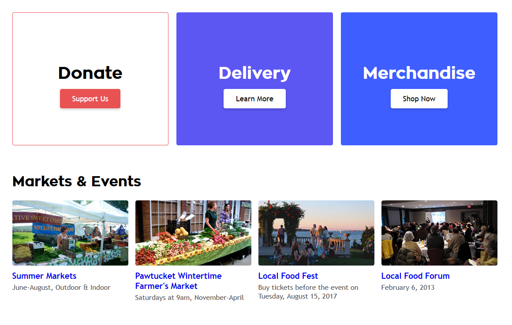

First Draft
Creating an initial draft required forming a comprehensive set of wireframes to figure out the site's layout
before producing the final page. Here are the wireframes made for 5 of the site's pages:
Home Page
Events Page
About Page
Resources Page
Search Page
Mockup
When creating a more polished mockup, I annotated how the elements should compress on a mobile/tablet device to
reduce complications when building the web version. Due to time restrictions and project requirements, only the
events page was elaborated on.

Visual Redesign
Readability is improved with font contrast and increased whitespace (bold/themed font for headings,
readable & common
font for paragraphs). Here are the old and new designs next to each other:
Navbar
Navigation is streamlined with 3 main pages, a home icon, a search bar, and social media links.
On-hover dropdowns are removed since their content (e.g. events) are too prone to constant change
(which would decrease memorability).
Old
New
Main Content
The new design also uses properly uses white space and has complete mobile support, improving
usability across devices.
Old
New

A grid system is used for not only the navbar (separating and sizing the home icon, search bar,
links, and social media icons), but also for event lists, allowing for dynamic resizing based on
device width.
Tablet
Mobile
Back to Home